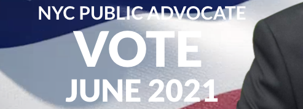

Who would advocate for the whole public?

New York City candidates for Public Advocate, ranked on digital bias
Although all 2021 candidates for Public Advocate of New York City profess a commitment to equality, diversity, and inclusion, their own campaign websites contain accessibility defects, violating industry and legal standards that aim to make digital content more usable for everybody, especially for people with sensory, physical, cognitive, and age-related limitations.
The ratings
How do the candidate web pages stack up?
In the following ratings, based on a method employed by Johns Hopkins University, the candidates’ home pages are ordered from most (at the top) to least (at the bottom) accessible. Details on the methodology are described in a companion article on mayoral candidates.
| Deficit | Name | URL |
|---|---|---|
| 17 | Theo Chino | https://pubadvocate.nyc/ |
| 26 | Jumaane Williams | https://jumaanewilliams.com/ |
| 26 | Devi E. Nampiaparampil | https://www.drdevifornyc.com/ |
| 53 | Tony Herbert | https://www.tonyherbert.com/ |
Who wins?
By this rating method, challenger Theo Chino has the most, and challenger Tony Herbert has the least, accessible home page. Between them, incumbent Jumaane Williams and challenger Devi E. Nampiaparampil are tied for the middle rank.
What’s the matter?
The rating method uses two programs, Axe and WAVE. They both inspect a web page, report some accessibility problems, and rate their severity. Combined, they give a quick rough estimate of how accessible or inaccessible a web page is.
A deficit score of 0 would mean these programs did not catch any defects. As you can see, that did not happen. All the home pages were faulted, and that means some persons, especially those with disabilities, will have trouble on all four campaign websites.
The most immediately obvious accessibility problem on all four pages is motion. Each of the pages has perpetually moving content, which you, the visitor, cannot stop. That is a problem. Motion that visitors cannot stop makes some persons distracted, confused, dizzy, nauseous, or even afflicted by seizures. The standards are clear: If there is motion on a web page, it must stop quickly, or the user must have the ability to stop it. But the best practice for accessibility is simply no motion, unless the visitor specifically turns it on.
Another easy-to-see accessibility flaw: Some of the text is hard to read, because it blends in with the background. The header above, from Tony Herbert’s home page, is an example, where some of the background is off-white and contrasts poorly with the white text superimposed on it. The accessibility standards protect persons with impaired vision by strictly requiring a particular minimum contrast. The home pages of all three challengers violate that standard. Only Jumaane Williams’s page complies with it.
Not obvious to the naked eye is whether photos, drawings, icons, and other images are coded for the benefit of blind visitors. They normally browse with the help of screen readers
, which read text out loud and interpret the structure of a page. Accessibility requires every image to have code telling a screen reader whether that image conveys information, and, if so, what information it conveys. But the pages of Jumaane Williams and Tony Herbert contain images without that code. A blind visitor would be told those images exist, but would learn nothing about them.
Some visitors have mobility limitations, such as tremors or paralysis, which rule out the use of a mouse. The accessibility standards require a web page to be fully usable with a keyboard. To reach a link or button, you press the Tab key, and the link or button you have moved to (the one that is in focus) must show you clearly where you are. Normally an outline appears for this purpose. But go to Theo Chino’s page, for example, put aside your mouse, and start pressing the Tab key. You will not see where your focus is. In the accompanying example, the focus is on The Subways
, but you cannot see that, so you don’t know which issue you will choose by pressing the Enter key. Only mouse users can see the focus: It turns red-on-white when you hover over it.
Some websites with accessibility defects offer a special accessibility menu or overlay
to overcome those problems. The Jumaane Williams website does that. This shows a concern for the needs of users with disabilities. However, the expert consensus is that all add-ons of that type fail to achieve accessibility, and under some conditions make accessibility worse.
Moral of the story
Whoever is elected as Public Advocate will be required by law to make his or her official website accessible. By selecting qualified employees or contractors to create an accessible campaign website, a candidate could demonstrate both competence in procurement and a respect for the diverse public for which the Public Advocate advocates. Some are doing a better job at that than others, but nobody has aced it.
Credits
This work was inspired by the Johns Hopkins University Vaccine Website Accessibility Dashboard and by colleagues who examined 2020 presidential candidate websites. This work is entirely my own and does not represent my employer, CVS Health.
I thank Jared Smith of WebAIM for details on the Vaccine Accessibility Dashboard method.